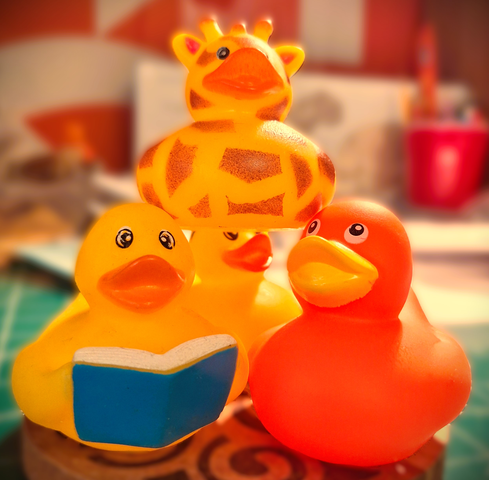

Your Time Starts Now!

A site about Taskmaster has got to have some tasks….surely?
The Prize Task
This project is self initiated and funded. If you would like to show your appreciation and gratitude in this project, feel free to donate to my buy me a coffee page. All donations are welcome.
Make a donation to the aforementioned Buy Me a Coffee page. The Median Donation Amount for the calendar month wins!
The Individual Task
In order to achieve the desired vision, multiple contributors would be appreciated; as of 2024-12-03 it is just myself. The first step in the road to this vision is to tell as many people about this project.
Tell and redirect as many people as you can about The Median Duck project. Most number of redirects for the calendar months wins!
The Team Task
There are no doubt teething errors and mistakes in this project; constructive feedback and criticism is welcome!
Provide constructive criticism on the project by sending an e-mail to themedianduck@gmail.com. Most useful constructive criticism provided wins. Your time starts now!
The Team Studio Task
Based on the ambitious vision of this project, and my limited skillset and bandwidth, contributors are also welcome in any shape or form (website design, article writing, analysis expertise)!
Contribute to The Median Duck project; best contribution wins. E-mail themedianduck@gmail.com to express your contribution interest. Most useful contribution provided wins. Your time starts now!